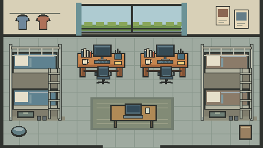
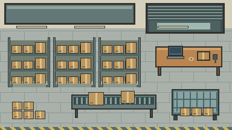
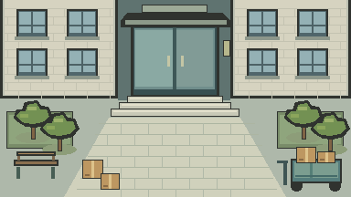

根据“过于简化、缺少区分度”重画 · 仍为程序草图
先让空间本身有所区别
三张均为384×216，保留原版作对照。改动集中在空间结构、主物件与使用痕迹，不只换墙色。人物、碰撞和交互尚未接入，其余九张尚未重画；没有真实建筑参考的部分均为演出设定。
合肥大学宿舍
上下铺、梯子、晾衣、双人学习位，中央保留走道。
第一版 · 用户反馈区分度不足 第二版 · 空间重画
第二版 · 空间重画
菜鸟驿站
开放卷帘门、密集包裹架、打包台、滚筒带和笼车。
第一版 · 用户反馈区分度不足 第二版 · 空间重画
第二版 · 空间重画
送货小区
室外住宅立面、内凹入口、台阶、庭院铺装与配送车。
第一版 · 用户反馈区分度不足 第二版 · 空间重画
第二版 · 空间重画
绘图源码 · 本轮范围与记录 · 全部初稿